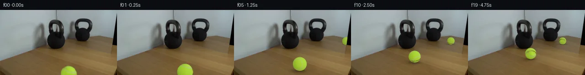
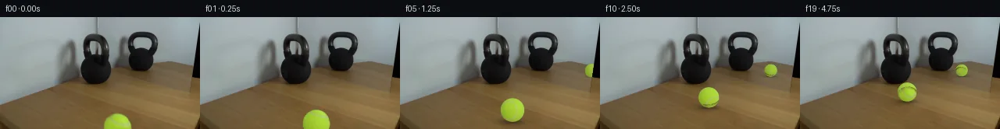
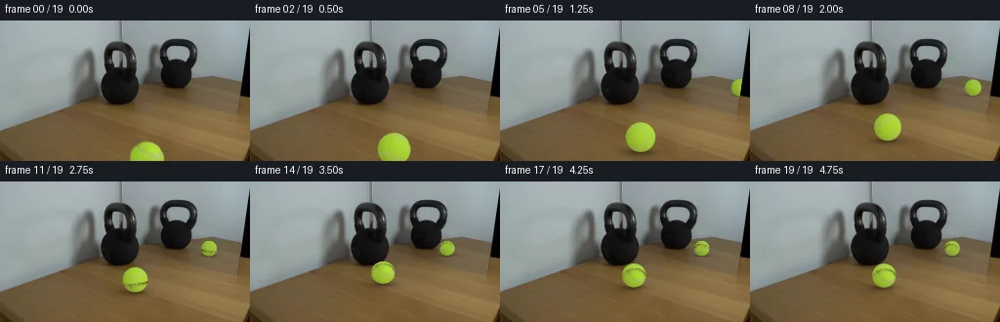
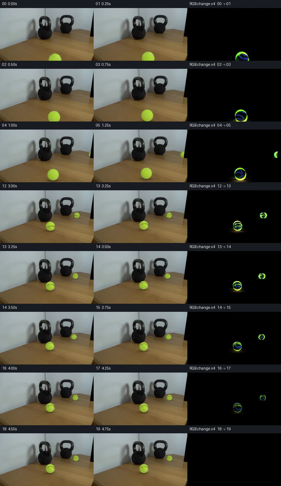

V0 · 初版
2026-11-05T16:55:29.438347+00:00 · RGB caf72a8d9e19
![]()
Observable Generation Trace
把最终像素视频、Harness 冻结的每轮候选、真实工具事件和 Agent 自述放在同一页。可观测证据与模型自述分开标记，避免把“模型说它检查过”误当成真实工具调用。
![首帧]()
Static locked-off single-shot with fixed frame throughout filmed with constant framerate in real-time. The scene shows a realistic scientific demonstration. The scene only contains the described setup and actions. The 30lb kettlebell sits next to a mirror that reflects the kettlebell on a wooden table. The tennis ball rolls slowly towards the 30lb kettlebell next to a mirror and hits the kettlebell.
首帧显示在左侧播放器初始画面。Track 权限、隔离和 tensor 一致性来自 run manifest，而不是 METHOD.md。
默认勾选初版和最终版；可选其他版本一起同步播放。仅检查图更新的连续重复快照已合并，回退旧视频仍保留为一次修订。
Observable events
来源：events.jsonl + run manifest
此 Track 禁止读取输出图片。逐轮预览由外部 Harness 自动冻结，只用于事后审计，生成 Agent 当时看不到这些页面。
Frozen candidates
每张图来自该 round 的真实 00 / 01 / 05 / 10 / 19 帧

pixels 63b5bfa9af849979 · code fc3237f8cd0ed688
--- previous/generate.py
+++ current/generate.py
@@ -0,0 +1,247 @@
+"""Single-image continuation using local NumPy/SciPy/Pillow pixel operations."""
+from pathlib import Path
+import json
+import base64
+import re
+import numpy as np
+from PIL import Image, ImageDraw
+from scipy import ndimage
+from scipy.spatial.transform import Rotation
+from artifact_io import save
+
+ROOT = Path(__file__).resolve().parent
+SOURCE = np.asarray(Image.open(ROOT / 'first_frame.png').convert('RGB'), dtype=np.uint8)
+H, W = SOURCE.shape[:2]
+Y, X = np.mgrid[:H, :W].astype(float)
+CX, CY, R0 = 149.92165, 141.28340, 18.5
+FLOOR0 = CY + R0
+FLOOR_HIT = 105.0
+X_HIT = 135.8
+rng = np.random.default_rng(155)
+
+
+def smoothstep(a, b, value):
+ t = np.clip((value - a) / (b - a), 0, 1)
+ return t * t * (3 - 2 * t)
+
+
+def clean_table():
+ """Match a nearby actual wood patch to the ring around the old ball."""
+ dist = np.hypot(X-CX, Y-CY)
+ ring = (dist > 22) & (dist < 29) & (Y > 116) & (X > 116) & (X < 183)
+ coords = np.stack([np.ones_like(X), (X-CX)/30, (Y-CY)/30], axis=-1)
+ best = None
+ for dx in range(-64, -30, 2):
+ for dy in range(-12, 1, 2):
+ donor = ndimage.map_coordinates(SOURCE.astype(float),
+ [np.broadcast_to((Y+dy)[..., None], (H,W,3)),
+ np.broadcast_to((X+dx)[..., None], (H,W,3)),
+ np.broadcast_to(np.arange(3)[None,None,:], (H,W,3))], order=1, mode='nearest')
+ correction = np.linalg.lstsq(coords[ring], SOURCE[ring].astype(float)-donor[ring], rcond=None)[0]
+ adjusted = donor + coords @ correction
+ score = np.mean(np.minimum((adjusted[ring]-SOURCE[ring])**2, 64))
+ if best is None or score < best[0]:
+ best = score, dx, dy, correction, adjusted
+ score, dx, dy, correction, adjusted = best
+ mask = 1 - smoothstep(20.0, 23.0, dist)
+ plate = SOURCE.astype(float)*(1-mask[...,None]) + adjusted*mask[...,None]
+ return np.clip(plate, 0, 255), {'donor_offset': [dx,dy], 'ring_match_mse': float(score),
+ 'restoration_bounds': [127,118,173,143]}
+
+
+PLATE, PLATE_INFO = clean_table()
+
+# Recover the source ball's lighting and its visible texture separately.
+U = (X-CX)/R0
+V = (Y-CY)/R0
+N = np.stack([U,V,np.sqrt(np.maximum(0,1-U*U-V*V))],axis=-1)
+F = np.concatenate([np.ones((H,W,1)),N],axis=-1)
+cloth = (U*U+V*V < .77) & (Y < 143) & (SOURCE[...,2] < 73) & (SOURCE[...,1] > 165)
+LIGHT = np.linalg.lstsq(F[cloth], SOURCE[cloth].astype(float), rcond=None)[0]
+SHADE = F @ LIGHT
+# The source silhouette is soft. Unmix it from the restored tabletop before
+# recovering texture, preventing a brown rim from rotating around the sphere.
+alpha_source = 1-smoothstep(R0-1.5, R0+.3, np.hypot(X-CX,Y-CY))
+corrected_source = (SOURCE.astype(float)-PLATE*(1-alpha_source[...,None])) / np.maximum(.2,alpha_source[...,None])
+RESIDUAL = corrected_source-SHADE
+
+# Fit an approximate spherical seam to measured centers of its visible arc.
+seam_xy = np.array([[142,130],[144,132],[146,134],[149,136],[152,137],
+ [156,138],[160,139],[164,139],[166,138]],dtype=float)
+seam_uv = (seam_xy-[CX,CY])/R0
+seam_n = np.c_[seam_uv,np.sqrt(np.maximum(0,1-(seam_uv**2).sum(1)))]
+seam_mean = seam_n.mean(0)
+_,_,sv = np.linalg.svd(seam_n-seam_mean)
+SEAM_NORMAL = sv[-1]
+SEAM_D = float(SEAM_NORMAL @ seam_mean)
+if SEAM_D < 0:
+ SEAM_NORMAL *= -1
+ SEAM_D *= -1
+
+
+def shade_sphere(cx,cy,radius,angle,reflection=False,compression=0):
+ """Inverse sphere rotation, source albedo sampling, and analytic completion."""
+ scale_x = 1+.028*compression
+ scale_y = 1-.035*compression
+ a = (X-cx)/(radius*scale_x)
+ b = (Y-cy)/(radius*scale_y)
… diff truncated; 160 more lines …pixels 63b5bfa9af849979 · code 5a4d2c997230c76d
--- previous/generate.py
+++ current/generate.py
@@ -235,7 +235,7 @@
steps.append({'from':t-1,'to':t,'changed_pixels':int(np.any(diff,axis=-1).sum()),
'mean_absolute_rgb':float(diff.mean()),'max_rgb_change':int(diff.max())})
# Kettlebell upper body, background, and far-left wood stay exact in all frames.
-fixed=(Y<50) | (X<92) | ((X>176)&(Y>86))
+fixed=(Y<50) | (X<92) | ((X>192)&(Y>86))
assert np.array_equal(frames[:,fixed],np.broadcast_to(SOURCE[fixed],frames[:,fixed].shape))
assert np.array_equal(frames[18],frames[19])
report={'count':20,'size':[256,144],'fps':4,'duration_s':5,
pixels 83adeb60aee17f5b · code 1bf4d493107780bb
--- previous/generate.py
+++ current/generate.py
@@ -17,7 +17,6 @@
FLOOR0 = CY + R0
FLOOR_HIT = 105.0
X_HIT = 135.8
-rng = np.random.default_rng(155)
def smoothstep(a, b, value):
@@ -140,6 +139,8 @@
MIRROR_MASK = (smoothstep(95,97,X)*(1-smoothstep(76,78,Y))
*(1-smoothstep(254-.12*Y,256-.12*Y,X)))
MIRROR_MASK *= smoothstep(121-.34*Y,123-.34*Y,X)
+MIRROR_FRAME = (SOURCE.max(axis=2)<70) & (X>240) & (Y<78)
+MIRROR_MASK[MIRROR_FRAME] = 0
def state(t):
@@ -189,6 +190,20 @@
frames=np.stack(frames)
save(frames,ROOT)
+# Use elapsed timestamps (frame 00 is t=0), keeping the 5-second playback period.
+player=(ROOT/'index.html').read_text()
+player=player.replace('${((frame+1)/4).toFixed(2)}','${(frame/4).toFixed(2)}')
+for before,after in [('lang="zh-CN"','lang="en"'),('像素续写 ·','PixelWorld Text ·'),
+ ('播放','Play'),('暂停','Pause'),('重播','Replay'),('循环','Loop'),
+ ('aria-label="帧"','aria-label="Frame"'),(' 帧 ·',' frames ·'),(' 秒',' s')]:
+ player=player.replace(before,after)
+(ROOT/'index.html').write_text(player)
+inspection=Image.new('RGB',(1024,330),(25,28,35)); labels=ImageDraw.Draw(inspection)
+for i,t in enumerate([0,2,5,8,11,14,17,19]):
+ ix=(i%4)*W;iy=(i//4)*165
+ labels.text((ix+5,iy+3),f'frame {t:02d} / 19 {t/4:.2f}s',fill='white')
+ inspection.paste(Image.fromarray(frames[t]),(ix,iy+21))
+inspection.save(ROOT/'inspection.png')
# Detailed transition artifact: adjacent real frames and amplified RGB delta.
transitions=[(0,1),(2,3),(4,5),(12,13),(13,14),(14,15),(16,17),(18,19)]
@@ -238,9 +253,18 @@
fixed=(Y<50) | (X<92) | ((X>192)&(Y>86))
assert np.array_equal(frames[:,fixed],np.broadcast_to(SOURCE[fixed],frames[:,fixed].shape))
assert np.array_equal(frames[18],frames[19])
+assert np.array_equal(frames[:,MIRROR_FRAME],np.broadcast_to(SOURCE[MIRROR_FRAME],frames[:,MIRROR_FRAME].shape))
+# Compare source kettlebell silhouettes with the composited contact frames.
+kettle=(SOURCE.max(2)<55)&(X>=103)&(X<=141)&(Y>=23)&(Y<=86)
+kettle_changes=[int(np.any(frame!=SOURCE,axis=2)[kettle].sum()) for frame in frames]
+assert all(value==0 for value in kettle_changes[:13])
+assert kettle_changes[14]>kettle_changes[13]
+assert all(records[i+1]['foot_y']<records[i]['foot_y'] for i in range(14))
+assert all(records[i+1]['foot_y']>records[i]['foot_y'] for i in range(14,18))
report={'count':20,'size':[256,144],'fps':4,'duration_s':5,
'frame00_exact':True,'all_png_tensor_matches':True,'html_delta_reconstruction_matches':True,
- 'fixed_region_exact':True,'settled_frames_equal':True,'plate':PLATE_INFO,
+ 'fixed_region_exact':True,'mirror_frame_exact':True,'settled_frames_equal':True,
+ 'kettle_pixels_covered_by_ball':kettle_changes,'plate':PLATE_INFO,
'lighting_coefficients':LIGHT.tolist(),'seam_plane':{'normal':SEAM_NORMAL.tolist(),'offset':SEAM_D},
'state':records,'transitions':steps,'review':'Numeric RGB and file checks only. No image tool was used.'}
(ROOT/'verification.json').write_text(json.dumps(report,indent=2)+'\n')Final visual checks
Harness 保存的最终产物


Agent claims
以下文字由生成 Agent 撰写，不等同于工具证据
The only scene inputs are first_frame.png and prompt.txt. All image examination is through local Python and numeric RGB values. No image Read/View tool, external reference, model, engine, or subagent is used.
Use 20 frames, sampled at 4 fps. Frame 00 is byte-for-byte RGB identical to the source. The table, background, mirror frame, and kettlebell retain their source pixels except where the moving ball or its shadow physically covers them. The moving sphere has a rolling seam, soft edge, source-matched shading and a contact shadow. Restore the ball’s original foreground footprint using nearby tabletop pixels. The reflective projection is an approximate image-space fit to this single input, anchored to the measured kettlebell and its reflection.
The approach follows constant world speed with perspective projection. At frame 14 the soft ball contacts the immovable heavy kettlebell. Use a slight brief flattening at contact and a small damped rebound, followed by rest. No kettlebell displacement, mirror displacement, camera motion, cuts, added labels, or other objects.
| Frame | Time (s) | Ball center x | Ball center y | Radius | Event |
|---|---|---|---|---|---|
| 00 | 0.00 | 149.92 | 141.28 | 18.50 | Exact source; lower ball clipped |
| 01 | 0.25 | 148.44 | 136.19 | 17.84 | Begins slow rolling approach |
| 02 | 0.50 | 147.06 | 131.46 | 17.22 | Roll away from camera |
| 03 | 0.75 | 145.77 | 127.05 | 16.64 | Ball clears bottom frame edge |
| 04 | 1.00 | 144.57 | 122.92 | 16.10 | Reflection begins entering at right |
| 05 | 1.25 | 143.45 | 119.05 | 15.59 | Continues rolling |
| 06 | 1.50 | 142.39 | 115.41 | 15.11 | Continues rolling |
| 07 | 1.75 | 141.40 | 112.00 | 14.67 | Continues rolling |
| 08 | 2.00 | 140.46 | 108.78 | 14.25 | Continues rolling |
| 09 | 2.25 | 139.58 | 105.74 | 13.85 | Continues rolling |
| 10 | 2.50 | 138.74 | 102.86 | 13.47 | Nears kettlebell |
| 11 | 2.75 | 137.95 | 100.14 | 13.11 | Nears kettlebell |
| 12 | 3.00 | 137.20 | 97.56 | 12.78 | Final approach |
| 13 | 3.25 | 136.49 | 95.11 | 12.46 | Just before contact |
| 14 | 3.50 | 135.80 | 92.86 | 12.14 | Contact; slight compression |
| 15 | 3.75 | 136.19 | 94.21 | 12.32 | Small rebound |
| 16 | 4.00 | 136.48 | 95.18 | 12.44 | Rebound slows |
| 17 | 4.25 | 136.64 | 95.76 | 12.52 | Almost at rest |
| 18 | 4.50 | 136.70 | 95.95 | 12.55 | Settled |
| 19 | 4.75 | 136.70 | 95.95 | 12.55 | Holds settled state |
Planned numerical checks: dimensions and count, exact first frame, RGB PNG/tensor equality, HTML player reconstruction, moving-ball bounds and contact behavior, preserved static-region pixels, and adjacent-frame differences. Save inspection and transition sheets as required artifacts without claiming visual review.
Created a 20-frame, 256 × 144 RGB continuation at 4 fps, lasting five seconds. Frame 00 has exactly the source RGB pixels. The fixed view shows the tennis ball rolling toward the stationary 30 lb kettlebell, reaching its front/right base, making a small rebound, and settling. The mass comes from the prompt; it was not read from the source pixels.
Read the PNG with Pillow and examined dimensions, RGB samples, threshold-connected regions, and row-wise color boundaries in local Python. No image Read/View tool was used, and no visual review is claimed. Wrote OBSERVATION.md, including measured coordinates and the 20-frame plan, before writing the generation implementation.
Only first_frame.png and prompt.txt supply scene content. No network, other cases, references, external masks, scores, AI models, rendering engines, or subagents were used. All temporary work stayed in this workspace.
generate.py uses NumPy, SciPy, and Pillow. The original photograph supplies the entire fixed scene, including both the physical kettlebell and its existing mirror image. No new kettlebell is rendered.
The initial ball is partly outside the lower frame. G–R zero crossings fit its visible boundary to center (149.922, 141.283), radius 17.618 pixels, with a 0.193-pixel RMS boundary residual. The renderer uses an 18.5-pixel radius with a soft silhouette to account for the source edge transition.
The ball’s original footprint is restored using an actual nearby wood patch. A bounded search compares source patches against a ring around the ball, fitting a per-channel planar color correction. The selected donor offset is (−56, −4) pixels. A feathered circular blend confines restoration to the old ball and its immediate edge. This reconstructs hidden tabletop texture approximately; the original pixels behind the ball are unavailable.
For the moving ball, the implementation computes analytic sphere normals, inverse-rotates them about the rolling axis, and samples the photographed visible ball texture. A least-squares linear fit to non-seam cloth pixels separates source shading from color residuals. The original photographed region supplies albedo and its pale seam wherever it is available. Unobserved lower and rear portions use deterministic fine trigonometric texture and two approximate spherical seam arcs fitted to measured points on the visible seam. These are synthesized continuations, not recovered hidden details. Stationary lighting is reapplied to the rotating surface. Soft alpha edges and Gaussian contact shadows integrate the sphere with the tabletop.
The ground-contact image coordinate follows foot(t) = foot(0) / (1 + k t). Radius scales with that coordinate, and horizontal position follows the corresponding perspective path. This represents a straight constant-speed approach under a simplified perspective projection. Rolling angle advances steadily during the approach. At frame 14, about 3.5 seconds, the ball has center (135.8, 92.843), radius 12.157, and a brief 3.5% vertical compression with slight lateral widening. A quadratic damped rebound moves the foot coordinate back by 3.5 pixels and unwinds the texture slightly. Frames 18 and 19 hold the same settled state. The kettlebell remains stationary; its lower source pixels are only covered temporarily by the foreground ball.
The tennis ball’s mirror image uses the same rotating surface with horizontal reversal and a small attenuation. Its position and scale follow an approximate image-space reflection projection constrained to the measured glass area. It starts outside the right boundary, enters the glass around frame 04, and approaches the reflected kettlebell. The dark right frame is excluded using source RGB values and stays exactly unchanged. This single-frame reflection fit is not a calibrated three-dimensional optical reconstruction.
pixels.npz: pixels, uint32, shape (144, 256, 20), packed as 0xRRGGBB.frames/00.png through frames/19.png: all 20 RGB frames.index.html: self-contained canvas player with embedded first-frame and delta data, playback at 250 ms per frame, seek, replay, and loop controls. No server or network access is needed.inspection.png: eight selected frames with elapsed timestamps.transition_check.png: eight adjacent-frame comparisons and amplified absolute RGB differences.verification.json: motion states, reflection coordinates, pixel comparisons, and transition statistics.The script checks every PNG against the decoded packed tensor, verifies exact source equality for frame 00, and reconstructs every HTML delta packet to confirm that player data equals the tensor. It also verifies exact preservation of the sampled fixed regions and the dark mirror frame, a monotonically approaching trajectory followed by the small rebound, projected ball coverage at impact, and identical final settled frames. The source dark kettlebell silhouette has zero changed pixels through frame 12, 2 covered pixels in frame 13, and 17 at impact in frame 14; the coverage returns to zero as the ball settles after the rebound. Adjacent-frame mean absolute RGB differences fall to 0.087 near the end and then zero for frames 18 → 19.
These are numerical and artifact checks. The saved inspection sheets were not viewed with an image tool. The tabletop restoration, hidden ball texture, contact deformation, and mirror projection are explicit approximations based on the single provided photograph.
Reproduce all generated artifacts and checks with python generate.py from this workspace.